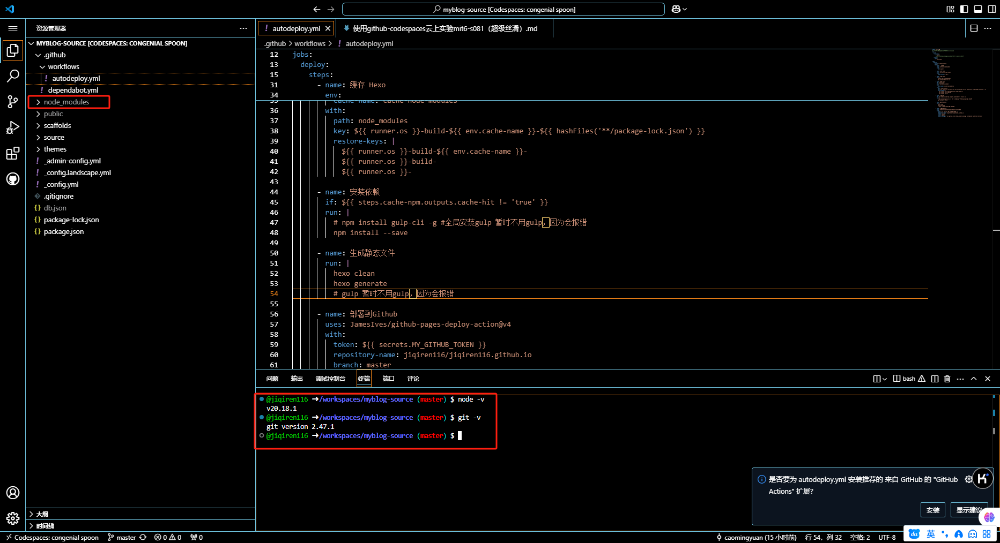
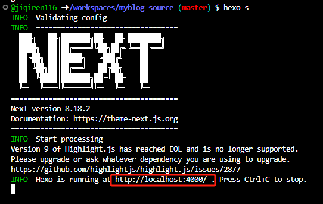

在github codespaces上写博客
前言
自己的博客已经很久没有动过了，一直默默的呆在github pages上面，正好自己最近了解到了github codespaces，我理解它是一个云主机（默认ubuntu，自带nodejs和git），我之前把实验mit6.s081部署到了上面，很丝滑，我就在想能不能把hexo本地博客部署到上面，如果成功的花就可以不限设备，随时随地的写博客了，只要有网络，能连接github就行了。
后来参考了网上的资料实现了，最后的效果是，可以直接在github codespaces上面写文章，也可以使用hexo s命令预览，同时使用了github actions自动化部署，只要将文章push到github上，就会触发github action自动执行hexo g和hexo d等命令，自己需要做的只有1.写文章 2. push到github上。
参考文章
我主要是参考了下面这两篇文章
部署过程
1. 将本地博客上传到github
我最开始是在本地写博客，通过hexo生成静态资源然后部署到github pages。
因此，我们第一步是将原来本地博客打包上传到github上面，关于如何上传到github自己去网上搜吧。
大体步骤就是：
- 在github上创建存储博客的private仓库，名字可以叫
myblog-source。- 将本地博客上传到仓库
myblog-source，注意些好.gitignore。
这里有几个注意事项：
github仓库最好是private，我看网上都是这么说的，说是为了保护个人信息什么的。我也就跟着他们一块了
一定要写好
.gitignore文件，因为这个本地博客可能会很大，我当时的本地博客得有个好几百兆。下面是我的.gitignore
2
3
4
5
6
7
8
9
10
Thumbs.db
db.json
*.log
node_modules/
public/
.deploy*/
.deploy_git/
.idea
themes/next/.git
2. 启动github codespaces
按照前面的两个参考文章，开启myblog-source仓库的github codespaces。开启后就是下面这个样子：

跟你在本地开发的时候一模一样，而且node_modules都自动下好了，自带nodejs和git。但我在使用时提示hexo没有找到，可能需要你手动使用npm install hexo-cli -g安装hexo，安装完成后就可以使用各种hexo命令了，例如，我用hexo s开启了本地模拟博客，访问4000端口就可以看到了，跟在自己电脑上的一模一样。

3. github actions的使用
前面都好的话，我们还要每次在github codespace中写完博客的时候执行hexo clean，hexo g … 等一系列命令才能将hexo生成的静态资源推送到github pages，很麻烦，但现在可以使用github actions来取代前面一系列的复杂操作，github actions类似脚本，下面是我的（我也忘记是抄的谁的了）。
下面这个github actions作用就是在codespace写完博客push到github后，会触发actions，会自动完成hexo的一系列命令并部署到github pages，很方便。
1 | name: 自动部署 |
至此，我们将本地博客部署到github codespaces就完成了，感谢前面两篇文章的作者，有了github codespace后感觉能做很多的事情。